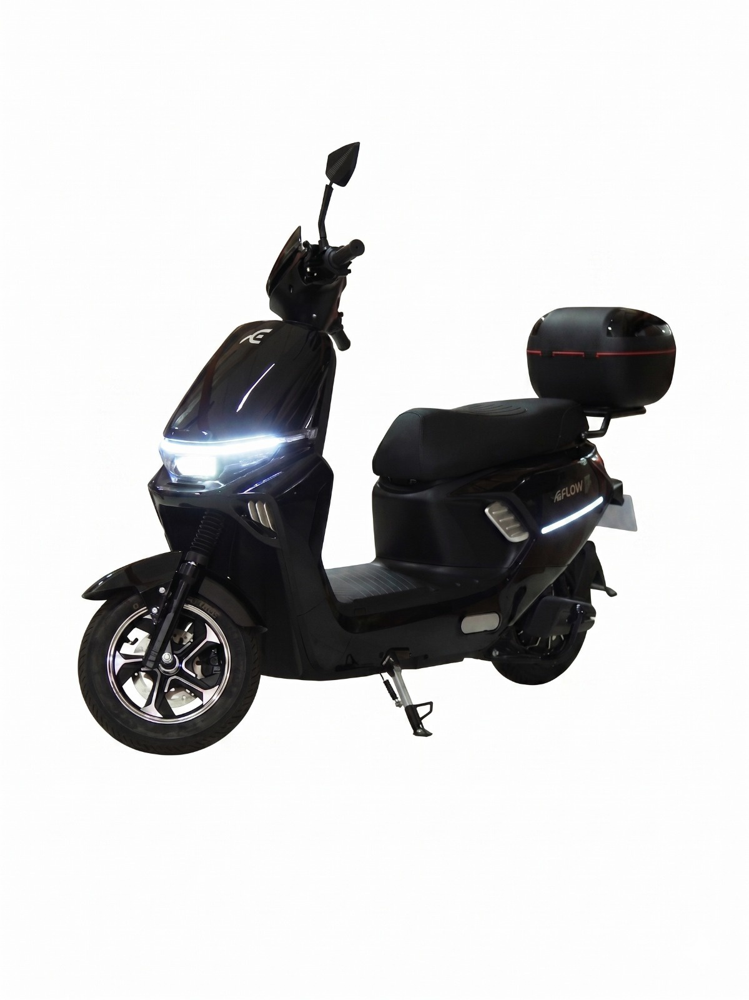
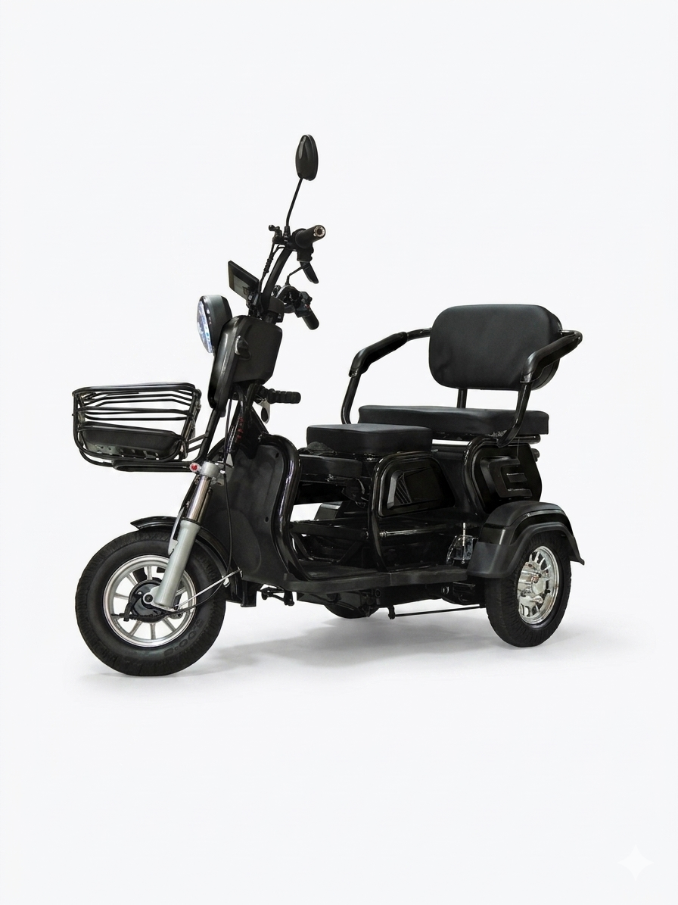

PROBIKE.
PRÉVIA DE CATÁLOGO · MOBILIDADE ELÉTRICA
Mobilidade
no seu ritmo.
UMA IDEIA PARA EXPLORAR, COMPARAR E CONVERSAR.
 BICICLETA ELÉTRICA · CATEGORIA CONFIRMADA
BICICLETA ELÉTRICA · CATEGORIA CONFIRMADAFOTO DE REFERÊNCIA · EFLOWMODELO E ESTOQUE DA PRO BIKE A CONFIRMAR

SCOOTER ELÉTRICA · A CONFIRMAR COM A LOJA
TRICICLO ELÉTRICO · A CONFIRMAR COM A LOJA